Developer tools · early access

NewEye
Every AI coding session about a project, in one place. NewEye reads what Claude Code, Codex, OpenCode and Cursor keep on your computer, plus chats you export from claude.ai and ChatGPT, and shows them by project. Read any session, continue it from inside NewEye, combine sessions from different tools, and tidy up.
All versions: github.com/offleg/neweye-releases
What it does
AI coding tools each keep their own history in their own place. NewEye puts them side by side, by project, so you always know what was done, by which tool, and can pick up where you left off.
See everything
Open a project and see every session about it: Claude Code, Codex, OpenCode, Cursor, and chats imported from claude.ai or ChatGPT. Named from what was said, newest first.
Continue from here
Type into a Claude Code, Codex or OpenCode session right inside NewEye, attach files, answer the tool's permission questions, and run several tools in tabs. Switch to another tool when one runs out.
Tidy and share memory
Combine sessions from different tools into one thread, move old ones to the trash, and feed everything into a shared memory so every tool knows what the others did.
Know your toolbox
See what each tool can do on your computer, which helpers to install and where, and what would make your setup better.
Questions
Found a problem? Email contact@offleg.com and attach the log file (Help menu, "Open log file").
Does NewEye send my code or chats anywhere?
No. NewEye runs on your computer and has no server of its own. It reads the files your tools already keep and shows them to you. The only thing it downloads is its own list of helper tools.
Do I need an account?
No. NewEye uses the sign-ins your tools already have. If a tool is not signed in, NewEye says so and opens that tool's own sign-in.
Which tools does it read?
Claude Code, Codex, OpenCode and Cursor on this computer, Claude Code cloud sessions, and chats exported from claude.ai and ChatGPT. It can type into Claude Code, Codex and OpenCode.
Where does it keep its own data?
In your user's application folder: Library/Application Support/NewEye on a Mac, AppData\Roaming\NewEye on Windows. Your tools' own files are never changed. Deleting a session in NewEye moves it to NewEye's trash first.
Why does my computer warn me when I open it?
Early-access builds are not signed with Apple or Microsoft yet, so the first open shows a warning. Right-click and Open on a Mac; More info, then Run anyway on Windows. Signed builds come later.